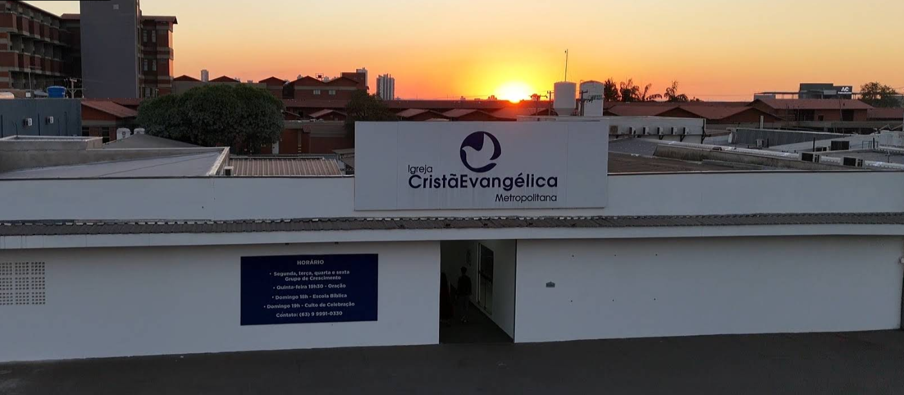
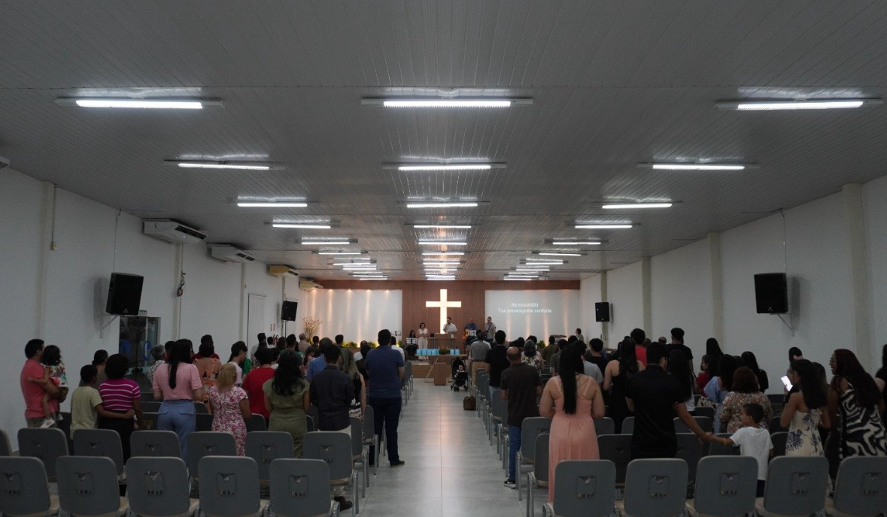
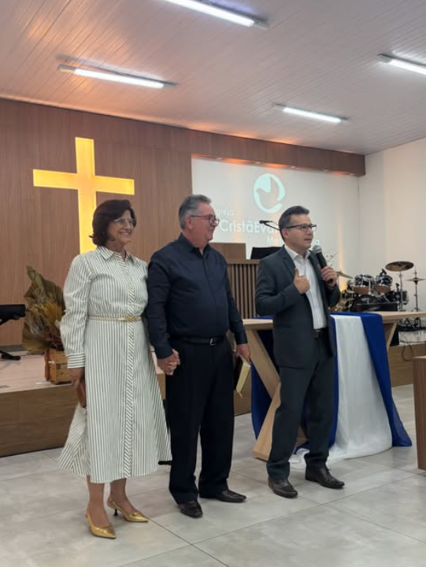
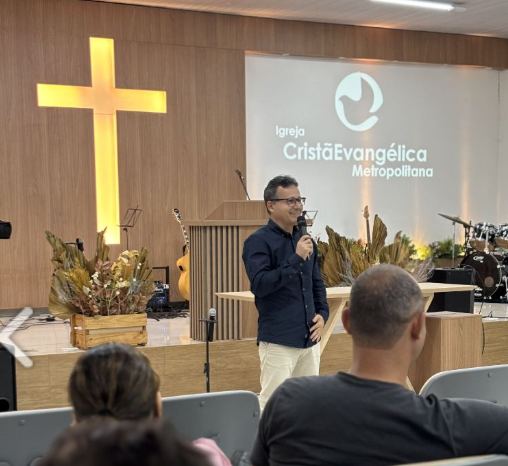
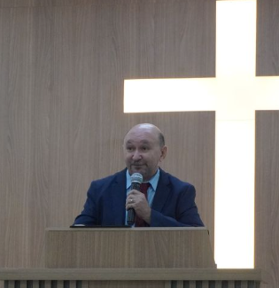
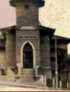
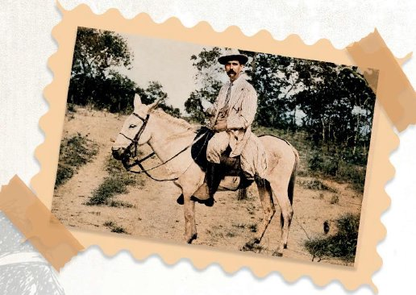
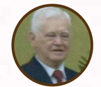

Uma história de fé.
Firmada na Palavra.
A Igreja Cristã Evangélica do Brasil (ICEB) é uma denominação histórica, bíblica e missionária, presente em todas as regiões do país e em diferentes partes do mundo.
A História da ICEB:
125 Anos de Fé, Coragem e Missão
Dos pioneiros em 1897 e a consagração na mina de Morro Velho, passando por Bryce Ranken e Gameleira até os dias de hoje.
Quem Somos
Caracterizamo-nos por uma tradição de culto centrada nos princípios encontrados na Palavra de Deus. Nossos pastores são preparados teologicamente e prezam pela pregação bíblica e exposição fiel das Escrituras.
menu_book Adoração Centrada em Cristo
Cantamos verdades com profundidade teológica, preservando a rica herança do hinário Salmos e Hinos e cânticos de adoração sincera.
Nossa Identidade
O que nos caracteriza como denominação
Palavra
Compromisso inegociável com a centralidade das Escrituras e a pregação fiel.
Formação
Preparo e mentoria de obreiros e líderes teológicos para servir à Igreja.
Missão
Levar o Evangelho ao Brasil e ao mundo através da plantação de novas igrejas.
Serviço
Instrumento de Deus para transformar vidas, famílias e cidades inteiras.
Nossas Instituições
Formando, educando e cuidando com excelência
SETECEB
FormaçãoSeminário Teológico Cristão Evangélico
Sediado em Anápolis (GO), dedicado há décadas ao preparo de homens e mulheres para o ministério pastoral.
Editora Cristã Evangélica
EducaçãoEducação e Literatura Bíblica
Alcança milhares de igrejas no Brasil com materiais de EBD para todas as faixas etárias.
Lar Cristão
Ação SocialAcolhimento e Dignidade
Tradição em assistência e promoção humana em Anápolis (GO).
Fé e Responsabilidade
Princípios que orientam nossa liderança
Ética
Vida digna e irrepreensível no Evangelho
Transparência
Responsabilidade administrativa plena
Comunhão
Caminhada em mútua cooperação
Serviço
Amor prático às cidades e pessoas
Conheça uma Igreja Cristã Evangélica
Visite uma das nossas congregações espalhadas pelo Brasil e participe da nossa comunhão.
Congregações
Painel da Liderança Pastoral
Você tem permissão para editar os dados da ICEMP




Igreja Cristã Evangélica Metropolitana de Palmas
location_on Q. 201 Sul, Av. Teotônio Segurado, Palmas - TO
Corpo Pastoral
Pr. Ubiracy Lucas
Esposa: Adriana Lucas

Pr. Raimundo Brindeiro
Esposa: Jacilene Sales
Cultos e Reuniões
Culto de Celebração
Louvor e pregação expositiva da Palavra
Escola Bíblica Dominical (EBD)
Classes para adultos, jovens e crianças
Culto de Oração & Estudo
Intercessão e fortalecimento espiritual
Oração Matutina
Terça 06h30 e Domingo 07h00
Dízimos e Ofertas
PIX CNPJ: 10.900.748/0001-02
A História da ICEMP:
Da Garagem ao Altar da Palavra
Nascida em 15 de fevereiro de 2009 na garagem pastoral, plantada na Av. Teotônio Segurado e sustentada pela soberana graça de Deus.
Agenda ICEMP
Eventos da ICE Metropolitana de Palmas
Estudos & Artigos
Edificação Bíblica e Teológica
"Cresçam, porém, na graça e no conhecimento de nosso Senhor e Salvador Jesus Cristo."
— 2 Pedro 3:18
Uma história de
fé, coragem e Evangelho.
Mais do que datas e acontecimentos, a história da Igreja Cristã Evangélica do Brasil é marcada por homens e mulheres que atravessaram caminhos, sertões e gerações para proclamar a mensagem da cruz.
125
Anos
320+
Igrejas
17
Estados
600+
Obreiros
Raízes que Atravessam Gerações
A Igreja Cristã Evangélica do Brasil como conhecemos hoje tem mais de quatro décadas desde sua reunificação oficial, mas suas raízes foram lançadas muito antes. Através de missionários intrépidos e obreiros leigos, congregações foram se formando no interior e capitais desde os primeiros anos do século XX.
Diversas igrejas batistas, presbiterianas e metodistas receberam a influência desse mover, que culminou no rico patrimônio eclesiástico da AICEB.
A Visão Missionária dos Pioneiros
A semente missionária da Igreja Cristã Evangélica do Brasil não nasceu do acaso: foi fruto direto do grande despertamento espiritual que comoveu o mundo anglo-saxão nos séculos XVIII e XIX — o mesmo mover que impulsionou William Carey à Índia, David Livingstone à África, Hudson Taylor à China e Robert Reid Kalley ao Brasil.
Esse despertar culminou no histórico Congresso Missionário de Edimburgo (1910), reunindo 1.200 delegados mundiais, a partir do qual foi constituída a EUSA / UESA (União Evangélica Sul-Americana), a missão guarda-chuva que deu respaldo aos intrépidos pioneiros no interior brasileiro.
A história da ICEB se inicia com a consagração de mil libras esterlinas ao Senhor por três operários ingleses da Companhia de Mineração São João del Rei (em Morro Velho, Nova Lima - MG):
Reginaldo Young
O Datilógrafo
Frederick Glass
Oficial de Ensaio
Frank Shiftermoth
O Eletricista
Ao saírem da mina, onde trabalhavam, abrigaram-se em uma casa em Ouro Preto (MG) e Vitória (ES), onde Young plantou a primeira igreja e deu início a um instituto bíblico com os próprios recursos.
home_pin Reginaldo & Kate Young: O Desembarque em 1896
O casal Young desembarcou no Brasil em 10 de julho de 1896, sem respaldo de nenhuma sociedade missionária oficial. Trabalhavam de casa em casa, com muita oração e visitas pessoais. Em 25 de agosto de 1901, fundaram a Igreja Cristã Paulistana, primeira igreja formal da denominação, instituindo um seminário para pastores nacionais.

Templo 1901explore Frederick Glass: O Jovem Aventureiro que Desbravou os Sertões

Arquivo Histórico"O perigo dos índios e das feras era, para Glass, com seu espírito aventureiro, mais um atrativo irresistível."
Nascido em Londres em 23 de fevereiro de 1871, formou-se em Engenharia Geológica e mecânica. Em 1892, ouvindo colegas falarem do Brasil como um "novo Eldorado", sentiu arder no peito o desejo da aventura. Embarcou no navio Madeleine rumo ao Brasil com apenas 21 anos.
Ao desembarcar no Rio de Janeiro durante o governo de Floriano Peixoto, seu estilo britânico e sua bengala causaram estranheza; sem falar português, acabou detido e passou a noite na prisão da capital — episódio que descreveu como "uma das noites mais tétricas de minha vida", antes de ser libertado.
Trabalhou na Estrada de Ferro Mogiana em Ribeirão Preto (SP) e, posteriormente, mudou-se para as minas de ouro de Morro Velho (MG) como mineralogista. Foi ali, impactado pelo colapso de terras da mina e pelo testemunho dos operários cristãos, que Glass entregou radicalmente sua vida a Cristo.
O Ministério Destemido de Frederick Glass:
A logística missionária dos pioneiros partia dos portos de Santos e do Rio de Janeiro (de onde retiravam pesados caixotes de Escrituras), avançava pelas ferrovias até onde houvesse trilhos e continuava no lombo de mulas e canoas ribeirinhas, alcançando sertões, quilombos e tribos que nunca haviam ouvido o nome de Jesus Cristo — saga imortalizada por Archibald Macintyre em "Bandeirantes da Bíblia" e "Descendo o Araguaia".
Rev. Bryce Ranken & O Concílio Goiano
Nascido em Liverpool (1870), Rev. Bryce William Ranken foi o pioneiro que aliou coração pastoral ardente a uma notável capacidade de organização e governança eclesiástica. Foi secretário da Associação Cristã de Moços (ACM) de Liverpool, trabalhou na Argentina em 1904 e desembarcou no Brasil em 1905, assumindo o pastorado da Igreja Cristã Paulistana e a liderança executiva da South America Evangelical Mission (SAEM, mais tarde UESA).
Sua visão administrativa consolidou a igreja em São Paulo e o trabalho de Catalão (aberto por Glass em 1902), além de abrir a frente missionária em Santa Cruz de Goiás. Ofereceu sólido apoio à obra iniciada pela missionária Annie Andrews em Jacareí (1907) e, em 1915, fundou a histórica Igreja Cristã Evangélica de São José dos Campos (SP).
Documentada na revista South America (1914), a rota de Ranken atravessou milhares de quilômetros no lombo de cavalo: saindo de São Paulo e Araguari, percorreu Catalão, Corumbaíba, Morrinhos, Bom Jardim, Entre Rios (Ipameri), Santa Cruz, Gameleira, Bonfim, Pouso Alto, Bela Vista, Alemão, Anápolis, Curralinho, Jaraguá e a antiga Cidade de Goiás. Em praticamente todas essas cidades floresceu uma Igreja Cristã Evangélica.
Ranken contou com a dedicação incansável de sua primeira esposa, Elizabeth Ranken (de profunda espiritualidade, que faleceu após a plantação em São José dos Campos), e posteriormente de Mary Gertrude Ranken (D. Gertrudes), que liderava com paixão as reuniões bíblicas infantis nas convenções.
Em setembro de 1913, no vilarejo de Gameleira (atual Cristianópolis - GO), em terras doadas pelo irmão José Pereira Faustino, Ranken idealizou a Primeira Convenção de Gameleira, onde famílias viajavam semanas para estudar as Escrituras.
O ápice ocorreu na Nona Convenção Goiana em julho de 1923: Ranken liderou a primeira iniciativa histórica dos missionários estrangeiros de transferir formalmente a liderança e o governo da denominação para os obreiros nacionais, fundando o Concílio Goiano. Ele mesmo fez a leitura oficial dos estatutos perante a assembleia e foi eleito o primeiro tesoureiro da nova organização.
Ranken estabeleceu com clareza o ensino do dízimo bíblico como indispensável para a emancipação espiritual e financeira da igreja nacional, administrou o "Fundo de Manutenção" dos pastores e o "Fundo do Seminário", e impulsionou o jornal "O Elo da Fé". Retornou à Inglaterra em 1925 com a saúde debilitada por mais de vinte anos de esforço exaustivo pelo Evangelho no Brasil Central.
Marcos dos 125 Anos de História
Acompanhe os principais acontecimentos que moldaram a ICEB de 1897 até o jubileu de 2026:
Conversão e Colportagem
Conversão de Frederick Glass. Início da distribuição e colportagem da Bíblia com Glass, Young e Frank em Ouro Preto (MG) e Vitória (ES).
Igreja Cristã Paulistana
Reginaldo Young funda a Igreja Cristã Paulistana em São Paulo (SP) e inaugura o seminário para capacitação de pastores brasileiros.
Expansão em Goiás e Paraná
Glass evangeliza Catalão (GO) em apenas 11 dias. Samuel Melo planta em Paranaguá (PR). São abertos trabalhos em Santa Cruz, Cidade de Goiás e Gameleira (Cristianópolis).
Primeira Convenção de Gameleira (Atual Cristianópolis/GO)
Idealizada pelo Rev. Bryce Ranken, unificou as congregações goianas, estabelecendo normas espirituais, doutrinárias e financeiras.
Primeiro Concílio Goiano
Início formal do processo de transição da governança eclesiástica das mãos dos missionários para a liderança brasileira.
Sociedade Dorcas e Anápolis
Convenção da Igreja Cristã em Anápolis (GO). Em São Paulo, estruturação do trabalho com mulheres cristãs através da Sociedade Dorcas.
Nascimento do SETECEB
Arthur Wesley Archibald funda o Instituto Bíblico Goiano, atual Seminário Teológico Cristão Evangélico do Brasil (SETECEB) em Anápolis (GO).
A UIECCB
Integração entre cristãos evangélicos e congregacionais, originando a União das Igrejas Evangélicas Congregacionais e Cristãs do Brasil.
Fundação do ICEG (Abrigo Goiano)
O Rev. Antônio Varizo Junior inicia a obra social e educacional "Abrigo Goiano", atual Instituto Cristão Evangélico de Goiás.
ICEnB e ICEB
Desligamento da união anterior. As igrejas de Goiás formam a Igreja Cristã Evangélica no Brasil (ICEnB) e as de SP, Brasília e Nordeste formam a Igreja Cristã Evangélica do Brasil (ICEB).
A GRANDE REUNIFICAÇÃO NACIONAL
Histórico Concílio Constituinte une definitivamente a ICEB e a ICEnB em um só corpo! A denominação nasce unificada com 68 igrejas, 48 pastores, além de criar a COMOCEB e o Departamento de Educação Cristã.
Consolidação e Editora Cristã Evangélica
1980: Criação da CONUAF (Mulheres em Ação). 1989: Revista Diadema Real. 1994: Fundação oficial da Editora Cristã Evangélica, tornando-se referência nacional em EBD.
MCE e DEIPRI
2016: Criação da Missão Cristã Evangélica (MCE). 2023: Fundação do DEIPRI (Departamento de Evangelização, Integração, Plantação e Revitalização de Igrejas) para acelerar a evangelização, plantação e revitalização de igrejas em todo o Brasil.
O Jubileu dos 125 Anos
Celebração oficial de 125 anos de fidelidade bíblica e ardor missionário! Mais de 320 igrejas e campos, 448 pastores titulares, 24 jubilados, 55 educadoras cristãs e 39 missionários servindo ao Senhor.
Presidentes da ICEB
Líderes que atenderam ao chamado de conduzir a denominação com zelo pastoral, oração e integridade doutrinária desde 1979:

Jessé P. Alcântara
1979 — 1981

João Arantes Costa
1981 — 1985
Abrão Rosa Lopes
1985 — 1989
João B. Cavalcante
1989 — 1991
Gedeão F. Morais
1991 — 1995
Luiz Cézar Nunes
1995 — 1999

Abimael de Sousa
1999 — 2006

Carlos E. Barbosa
2006 — 2010
João B. Cavalcante
2010 — 2018
Luiz Cézar Nunes
2018 — 2026 • Atual
A ICEB Hoje
Formação Teológica (SETECEB)
Seminário próprio em Anápolis (GO), formando obreiros e pastores com sólida visão exegética e bíblica.
seteceb.com.br arrow_forwardEducação Cristã (Editora Cristã Evangélica)
Produzindo revistas e literatura bíblica para todas as faixas etárias em milhares de igrejas no país.
editoracristaevangelica.com.br arrow_forwardEvangelismo & Plantação (DEIPRI)
Departamento dedicado a plantar novas congregações e revitalizar igrejas em centros urbanos e sertões.
Missões Globais (MCE)
Envio e sustento de missionários transculturais no Brasil e no exterior.
missaocristaevangelica.org arrow_forwardAção Social & Transformação (Lar Cristão / ICEG)
O cuidado integral da pessoa humana através do Lar Cristão, ICEG e ações comunitárias nas igrejas locais.
@iceg.oficial (Instagram) arrow_forwardFaça Parte Desta História
Venha congregar conosco e viver a fidelidade bíblica em uma comunidade acolhedora perto de você.
História da ICEMP
Metropolitana de Palmas • Desde 2009
Uma História Escrita Pela Graça e Soberania de Deus
A trajetória da Igreja Cristã Evangélica Metropolitana (ICEMP) é marcada pelo cuidado providencial de Deus em meio a lutas, recomeços e milagres. O Senhor reuniu um pequeno grupo na sala pastoral e, a partir dele, plantou uma igreja acolhedora, comprometida com a fidelidade bíblica e centrada na glória de Cristo.
Fundação
15/02/2009
Localização
Av. Teotônio Segurado
Igreja-Mãe
ICE Turvânia (GO)
Lema Bíblico
Igreja Gera Igreja
Um Começo Marcado Pela Graça: A Igreja da Garagem
A ICEMP nasceu em um contexto de mudanças e dores: um pastor que precisou deixar sua congregação em outro estado para cuidar da família, irmãos machucados e sem rumo aparente. No dia 15 de fevereiro de 2009, alguns irmãos se reuniram na sala do Pr. Otoniel Bueno. Ali, Deus transformou desânimo em esperança viva, e o grupo passou a se reunir na garagem da casa pastoral.
Do Improviso ao Primeiro Salão e a Cobertura da Igreja-Mãe
Com a chegada do período chuvoso em Palmas, a garagem já não comportava mais os membros. Em 2010, Deus providenciou o primeiro salão. Toda a membresia se mobilizou: os instrumentos foram adquiridos com venda de marmitex e galinhadas, e os membros faziam alegres mutirões para limpar, pintar e organizar o templo.
A ICEMP nunca desejou ser uma igreja isolada ou independente. Sua identidade confessional está firmemente ancorada na tradição centenária da Igreja Cristã Evangélica do Brasil (ICEB). A igreja-mãe da Metropolitana é a ICE de Turvânia (GO), sob a honrada liderança do Pr. Antônio Ferreira Bueno (Totó), que assumiu a missão de acompanhar, reconhecer e apresentar a congregação à denominação nacional.
O Marco da Avenida Joaquim Teotônio Segurado
Após cerca de dois anos no primeiro salão, Deus abriu as portas para um ponto definitivo e estratégico em Palmas: a Avenida Joaquim Teotônio Segurado (Q. 201 Sul). Engenheiros, eletricistas, mestres de obras e membros da congregação doaram seus serviços com esmero, sustentados pela fidelidade nos dízimos e ofertas generosas.
1º Culto no Novo Templo
22 de Janeiro de 2012 • Avenida Teotônio Segurado
Crescimento Teológico: SETECEB, CTM e "Crer e Ser"
Para que a igreja amadurecesse com alicerces inabaláveis, o pastorado incentivou a formação teológica trazendo para Palmas o CTM (Curso Teológico por Módulos), vinculado ao renomado SETECEB (Seminário Teológico Cristão Evangélico do Brasil, sediado em Anápolis/GO).
O Princípio Missionário da ICEMP
"Ovelha gera ovelha • Igreja gera igreja."
O contentamento da comunidade nunca esteve apenas em templos cheios, mas em ver a expansão do Reino de Deus. Mesmo ainda jovem, a Metropolitana cooperou fraternalmente com outras congregações no Tocantins e levantou novas frentes missionárias nos lares através dos Grupos de Crescimento (GCs).
Transição Pastoral Exemplar: Unidade, Prudência e Continuidade
Por cerca de 11 anos, o Pr. Otoniel Bueno liderou a ICEMP com dedicação exemplar e integridade, submetendo seu ministério à avaliação bienal da assembleia. Em 2019, entendendo o chamado do Senhor para retornar à igreja-mãe em Turvânia (GO), celebrou seu culto de despedida em 4 de agosto de 2019.
Pr. Ubiracy Lucas Barbosa
Eleito com ampla unanimidade em assembleia, dando continuidade ao pastoreio fiel e à exposição bíblica.
A Pandemia e a Fidelidade Constante do Senhor
O início do ministério do Pr. Ubiracy coincidiu com o distanciamento social da pandemia de COVID-19. Mesmo diante das restrições, a igreja não parou: realizou cultos transmitidos online, celebrações ao ar livre no estacionamento, acompanhamento pastoral por telefone e uma vigorosa rede de auxílio mútuo e socorro às famílias necessitadas.
Nossa Identidade e Pilares da Fé Cristã
Uma Igreja que Pertence ao Senhor
Conj. 01 - Q. 201 Sul, Av. Joaquim Teotônio Segurado, Lote 04 — Palmas (TO).
Portal de Acesso
ICE Metropolitana de Palmas
Portal de Membros & Liderança
Acesse sua conta para interagir ou use o acesso de liderança para gerenciar a ICEMP e seus eventos.
Membro / Participante
VisualizaçãoAcesso aos cultos, agenda de eventos, estudos de GC em PDF e informações gerais da ICEMP.
Liderança / Pastor
Gestão TotalPerfil para o Pastor e gestão. Permite editar dados da ICEMP (cultos, PIX, contatos) e inserir, editar ou remover eventos da igreja na nuvem.
Entrar com sua Conta
Criar Novo Perfil
Dízimos e Ofertas
Igreja Cristã Evangélica
Chave PIX (CNPJ)
Favorecido:
Primeira Igreja Cristã Evangélica
"Cada um dê conforme determinou em seu coração, não com tristeza ou por obrigação, pois Deus ama quem dá com alegria." (2 Co 9:7)
Como Chegar
Escolha seu aplicativo de navegação preferido
Agendar Cuidado Pastoral
Gabinete pastoral para aconselhamento bíblico e oração
Filtros de Congregações
Comodidades e Acessibilidade
Ministérios da Igreja
Igreja Cristã Evangélica
Departamentos e áreas de atuação onde a igreja serve a Deus e acolhe cada faixa etária:
Conselho da Igreja
Órgão Deliberativo
Estudos dos Grupos de Crescimento
ICE Metropolitana de Palmas
Grupos de Crescimento (GC)
11 Grupos nos Lares • ICEMP
Aniversariantes do Mês
Outubro • Comunidade ICEMP
"Deem graças em todas as circunstâncias, pois esta é a vontade de Deus para vocês em Cristo Jesus."
— 1 Tessalonicenses 5:18Novo Grupo de Crescimento
Gestão Pastoral ICEMP
Novo Aniversariante
Gestão Pastoral ICEMP
Membro da Igreja
Perfil: Visualização
Gestão da ICEMP
Exclusivo: Pastor / Liderança
Novo Evento ICEMP
Gestão de Agenda Pastoral
Novo Estudo / Artigo
Gestão Pastoral de Estudos